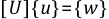

The system of simultaneous linear equations generated by the finite element procedure is solved either using a direct elimination process or an iterative method. A direct elimination process is primarily a Gaussian elimination approach which involves solving for the unknown vector of variables {u} in Equation 14–85:
 | (14–85) |
where:
| [K] = global stiffness/conductivity matrix |
| {u} = global vector of nodal unknown |
| {F} = global applied load vector |
The direct elimination process involves decomposition (factorization) of the matrix [K] into lower and upper triangular matrices, [K] = [L][U]. Then forward and back substitutions using [L] and [U] are made to compute the solution vector {u}.
A typical iterative method involves an initial guess, {u}1, of the solution vector {u} and then a successive steps of iteration leading to a sequence of vectors {u}2, {u}3, . . . such that, in the limit, {u}n = {u} as n tends to infinity. The calculation of {u}n + 1 involves [K], {F}, and the {u} vectors from one or two of the previous iterations. Typically the solution converges to within a specified tolerance after a finite number of iterations.
In the following sections, all of the solvers are described under two major subsections: Direct Solvers and Iterative Solvers (all accessed with EQSLV).
The direct solver that is available is the Sparse Direct Solver (accessed with EQSLV,SPARSE). The Sparse Direct Solver makes use of the fact that the finite element matrices are normally sparsely populated. This sparsity allows the system of simultaneous equations to be solved efficiently by minimizing the operation counts.
As described in the introductory section, the linear matrix equation, (Equation 14–85) is solved by triangular decomposition of matrix [K] to yield the following equation:
(14–86) |
where:
| [L] = lower triangular matrix |
| [U] = upper triangular matrix |
By substituting:
(14–87) |
we can obtain {u} by first solving the triangular matrix system for {w} by using the forward pass operation given by:
(14–88) |
and then computing {u} using the back substitution operation on a triangular matrix given by:
 | (14–89) |
When [K] is symmetric, the above procedure could use the substitution:
(14–90) |
However, it is modified as:
(14–91) |
where:
| [D] = a diagonal matrix |
The diagonal terms of [D] may be negative in the case of some nonlinear finite element analysis. This allows the generation of [L'] without the consideration of a square root of negative number. Therefore, Equation 14–86 through Equation 14–89 become:
(14–92) |
(14–93) |
(14–94) |
and
(14–95) |
Since [K] is normally sparsely populated with coefficients dominantly located around the main diagonal, the Sparse Direct Solver is designed to handle only the nonzero entries in [K]. In general, during the Cholesky decomposition of [K] shown in Equation 14–86 or Equation 14–92, nonzero coefficients appear in [L] or [L'] at coefficient locations where [K] matrix had zero entries. The Sparse Direct Solver algorithm minimizes this fill-in by judiciously reordering the equation numbers in [K].
The performance of a direct solution method is greatly optimized through the equations reordering procedure which involves relabeling of the variables in the vector {u}. This simply amounts to permuting the rows and columns of [K] and the rows of {F} with the objective of minimizing fill-in. So, when the decomposition step in Equation 14–86 or Equation 14–92 is performed on the reordered [K] matrix, the fill-in that occurs in [L] or [L'] matrix is kept to a minimum. This enormously contributes to optimizing the performance of the Sparse Direct Solver.
To achieve minimum fill-in, different matrix coefficient reordering algorithms are available in the literature (George and Liu([303])). The Sparse Direct Solver uses two different reordering schemes. They are the Minimum Degree ordering and the METIS ordering. The choice of which reordering method to use is automated in the solver algorithm in order to yield the least fill-in.
The ANSYS program offers a large number of iterative solvers as alternatives to the direct solvers (sparse solver). These alternatives in many cases can result in less I/O or disk usage, less total elapsed time, and more scalable parallel performance. However, in general, iterative solvers are not as robust as the direct solvers. For numerical challenges such as a nearly-singular matrix (matrix with small pivots) or a matrix that includes Lagrangian multipliers, the direct solver is an effective solution tool, while an iterative solver is less effective or may even fail.
The first three iterative solvers are based on the conjugate gradient (CG) method. The first of these three CG solvers is the Jacobi Conjugate Gradient (JCG) solver (Mahinthakumar and Hoole ([144])) (accessed with EQSLV,JCG) which is suitable for well-conditioned problems. Well-conditioned problems often arise from heat transfer, acoustics, magnetics and solid 2-D / 3-D structural analyses. The JCG solver is available for real and complex, symmetric and unsymmetric matrices. The second solver is the Preconditioned Conjugate Gradient (PCG) solver (accessed with EQSLV,PCG) which is efficient and reliable for all types of analyses including the ill-conditioned beam/shell structural analysis. The PCG solver is made available through a license from Computational Applications and System Integration, Inc. of Champaign, Illinois (USA). The PCG solver is valid for real symmetric and unsymmetric matrices. The third solver is the Incomplete Cholesky Conjugate Gradient (ICCG) solver (internally developed, unpublished work) (accessed with EQSLV,ICCG). The ICCG solver is more robust than the JCG solver for handling ill-conditioned matrices. The ICCG solver is available for real and complex, symmetric and unsymmetric matrices.
The typical system of equations to be solved iteratively is given as :
(14–96) |
where:
| [K] = global coefficient matrix |
| {u} = unknown vector |
| {F} = global load vector |
In the CG method, the solution is found as a series of vectors {pi}:
(14–97) |
where m is no larger than the matrix size n. The scheme is guaranteed to converge in n or fewer iterations on an infinite precision machine. However, since the scheme is implemented on a machine with finite precision, it sometimes requires more than n iterations to converge. The solvers allow up to a maximum of 2n iterations. If it still does not converge after the 2n iterations, the solution will be abandoned with an error message. The unconverged situation is often due to an inadequate number of boundary constraints being used (rigid body motion). The rate of convergence of the CG algorithm is proportional to the square root of the conditioning number of [K] where the condition number of [K] is equal to the ratio of the maximum eigenvalue of [K] to the minimum eigenvalue of [K] . A preconditioning procedure is used to reduce the condition number of linear Equation 14–96. In the JCG algorithm, the diagonal terms of [K] are used as the preconditioner [Q], while in the ICCG and PCG algorithms, a more sophisticated preconditioner [Q] is used. The CG algorithm with preconditioning is shown collectively as Equation 14–98.
(14–98) |
Convergence is achieved when:
(14–99) |
where:
| ε = user supplied tolerance (TOLER on the EQSLV command; output as SPECIFIED TOLERANCE) |
| {Ri} = {F} - [K] {ui} |
| {ui} = solution vector at iteration i |
also, for the JCG and ICCG solvers:
(14–100) |
(14–101) |
It is assumed that the initial starting vector {u0} is a zero vector.